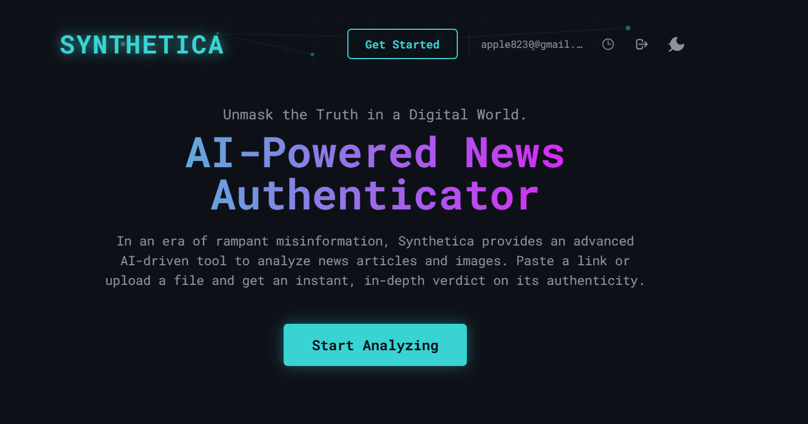
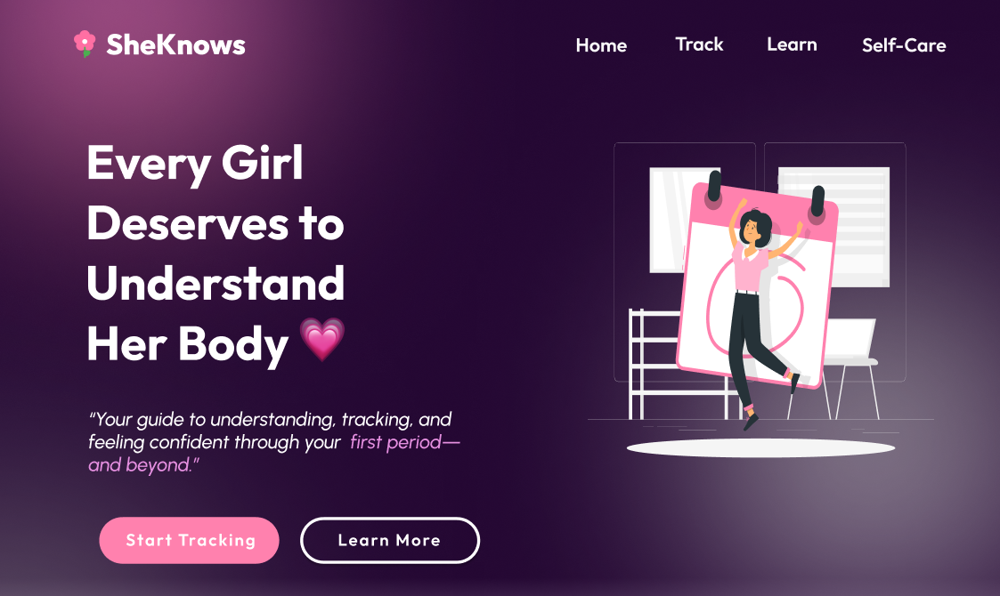

Projects

Project 1: FoodieHub (Restaurant Website)
A responsive restaurant website designed to display menu items, customer reviews, and online reservation options. It focuses on modern layout, appealing visuals, and easy navigation for users.
Technologies Used:
HTML
CSS
JavaScript
View FoodieHub

Project 2: Synthetica (Fake News Detector)
A machine learning-based web app that detects whether a news article or headline is fake or real. Built during a 24-hour hackathon to address the growing problem of misinformation online.
Technologies Used:
React
Node.js
MongoDB
View Synthetica

Project 3: SheKnows (Ongoing Project)
A women-centric platform designed to share information, articles, and resources about health, empowerment, and personal growth including an AI chatbot. The goal is to create a safe and informative space for women to learn and connect.
Technologies Used:
HTML/CSS
Open AI API (Chatbot Integration)
Figma